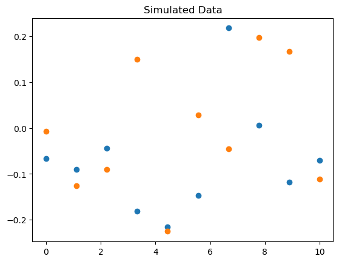
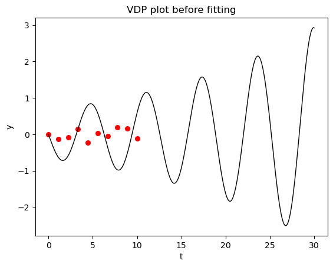
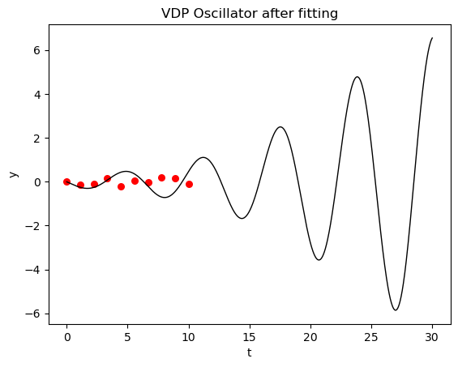
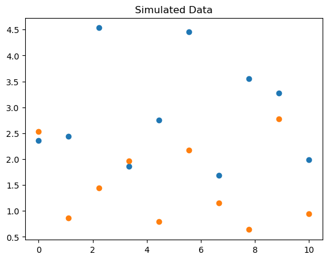
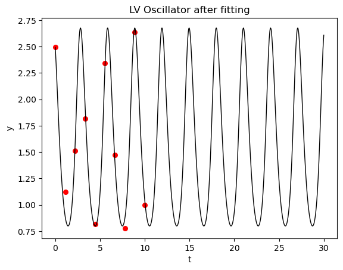

class SimODEData(Dataset):
"""
A very simple dataset class for simulating ODEs, really could just use
a tensor of the values directly but for general use it is very nice to
define a Dataset class for your data. This can handle batching and
other nice things.
"""
def __init__(self,
ts: List[torch.Tensor], # List of time points
values: List[torch.Tensor], # List of dynamical state values at each time point
) -> None:
self.ts = ts
self.values = values
def __len__(self) -> int:
return len(self.ts)
def __getitem__(self, index: int) -> Tuple[torch.Tensor, torch.Tensor]:
return self.ts[index], self.values[index]Training
This defines the parameter fitting (or to use the ML term training loop) for our ode models. It also shows how to organize your data into a Dataset and dataloader in pytorch.
SimODEData
SimODEData (ts:List[torch.Tensor], values:List[torch.Tensor])
A very simple dataset class for simulating ODEs, really could just use a tensor of the values directly but for general use it is very nice to define a Dataset class for your data. This can handle batching and other nice things.
| Type | Details | |
|---|---|---|
| ts | typing.List[torch.Tensor] | List of time points |
| values | typing.List[torch.Tensor] | List of dynamical state values at each time point |
| Returns | None |
create_sim_dataset
create_sim_dataset (model:torch.nn.modules.module.Module, ts:torch.Tensor, num_samples:int=10, sigma_noise:float=0.1, initial_conditions_default:torch.Tensor=tensor([0., 0.]), sigma_initial_conditions:float=0.1)
| Type | Default | Details | |
|---|---|---|---|
| model | Module | model to simulate from | |
| ts | Tensor | Time points to simulate at | |
| num_samples | int | 10 | Number of samples to generate |
| sigma_noise | float | 0.1 | Noise level to add to the data |
| initial_conditions_default | Tensor | tensor([0., 0.]) | Default initial conditions |
| sigma_initial_conditions | float | 0.1 | Noise level to add to the initial conditions |
| Returns | SimODEData |
def train(model: torch.nn.Module,
data: SimODEData,
lr: float = 1e-2,
epochs: int = 10):
trainloader = DataLoader(data, batch_size=5, shuffle=True)
optimizer = torch.optim.Adam(model.parameters(), lr=1e-2)
criterion = torch.nn.MSELoss()
for epoch in range(epochs):
running_loss = 0.0
for data in trainloader:
optimizer.zero_grad()
ts, states = data
initial_state = states[:,0,:]
pred = odeint(model, initial_state, ts[0]).transpose(0,1)
loss = criterion(pred, states)
loss.backward()
optimizer.step()
running_loss += loss.item()
if epoch % 10 == 0:
print(f"Loss at {epoch}: {running_loss}")train
train (model:torch.nn.modules.module.Module, data:__main__.SimODEData, lr:float=0.01, epochs:int=10)
Fitting the VDP Oscillator
Let’s use this training loop to recover the parameters from simulated VDP oscillator data
true_mu = 0.30
model_sim = VDP(mu=true_mu)
ts_data = torch.linspace(0.0,10.0,10)
data_vdp = create_sim_dataset(model_sim,
ts = ts_data,
num_samples=10,
sigma_noise=0.1)
_, y_data = data_vdp[0]
plt.scatter(ts_data, y_data[:,0]);
plt.scatter(ts_data, y_data[:,1]);
plt.title("Simulated Data");
vdp_model = VDP(mu = 0.10)
print(f"The starting point: {vdp_model}")
ts = torch.linspace(0,30.0,1000)
ts_data, y_data = data_vdp[0]
initial_conditions = y_data[0, :].unsqueeze(0)
sol = odeint(vdp_model, initial_conditions, ts, method='dopri5').detach().numpy()
# Check the solution
plt.plot(ts, sol[:,:,1], color='black', lw=1.0);
plt.scatter(ts_data, y_data[:,1], color='red', s=30);
plt.title("VDP plot before fitting");
plt.xlabel("t");
plt.ylabel("y");The starting point: mu: 0.10000000149011612
train(vdp_model, data_vdp, epochs=40)
print(f"After training: {vdp_model}, where the true value is {true_mu}")
print(f"Error: {vdp_model.mu - true_mu}")Loss at 0: 1.1857575476169586
Loss at 10: 0.46942032873630524
Loss at 20: 0.4495031386613846
Loss at 30: 0.44933897256851196
After training: mu: 0.2727024555206299, where the true value is 0.3
Error: -0.027297556400299072sol_after_fitting = odeint(vdp_model, initial_conditions, ts, method='dopri5').detach().numpy()
# Check the solution
plt.plot(ts, sol_after_fitting[:,:,1], color='black', lw=1.0);
plt.scatter(ts_data, y_data[:,1], color='red', s=30);
plt.title("VDP Oscillator after fitting");
plt.xlabel("t");
plt.ylabel("y");
Fitting the Lotka Voltera Equations
Now lets adapt our methods to fit simulated data from the Lotka Voltera equations.
model_sim_lv = LotkaVolterra()
ts_data = torch.linspace(0.0,10.0,10)
data_lv = create_sim_dataset(model_sim_lv,
ts = ts_data,
num_samples=1,
sigma_noise=0.1,
initial_conditions_default=torch.tensor([2.5, 2.5]))
_, y_data = data_lv[0]
plt.scatter(ts_data, y_data[:,0]);
plt.scatter(ts_data, y_data[:,1]);
plt.title("Simulated Data");
model_lv = LotkaVolterra(alpha=1.6, beta=1.1,delta=2.7, gamma=1.2)
train(model_lv, data_lv, epochs=40)
print(f"Fitted model: {model_lv}")
print(f"True model: {model_sim_lv}")Loss at 0: 0.011727926321327686
Loss at 10: 0.009199537336826324
Loss at 20: 0.008964814245700836
Loss at 30: 0.008998898789286613
Fitted model: alpha: 1.4918429851531982, beta: 1.0121153593063354, delta: 3.0134477615356445, gamma: 0.9995511174201965
True model: alpha: 1.5, beta: 1.0, delta: 3.0, gamma: 1.0initial_conditions = y_data[0, :].unsqueeze(0)
sol_after_fitting = odeint(model_lv, initial_conditions, ts, method='dopri5').detach().numpy()
# Check the solution
plt.plot(ts, sol_after_fitting[:,:,1], color='black', lw=1.0);
plt.scatter(ts_data, y_data[:,1], color='red', s=30);
plt.title("LV Oscillator after fitting");
plt.xlabel("t");
plt.ylabel("y");